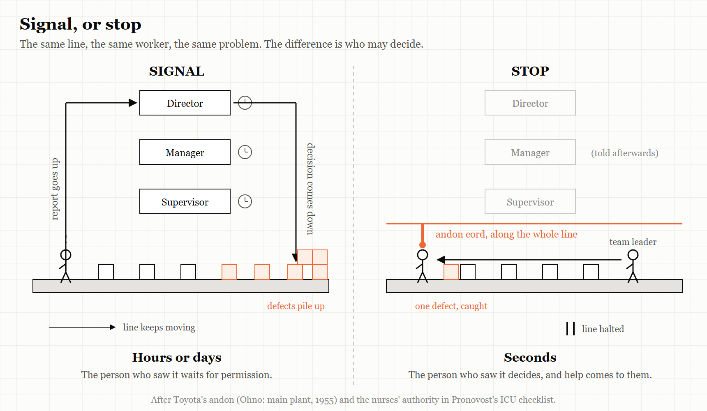
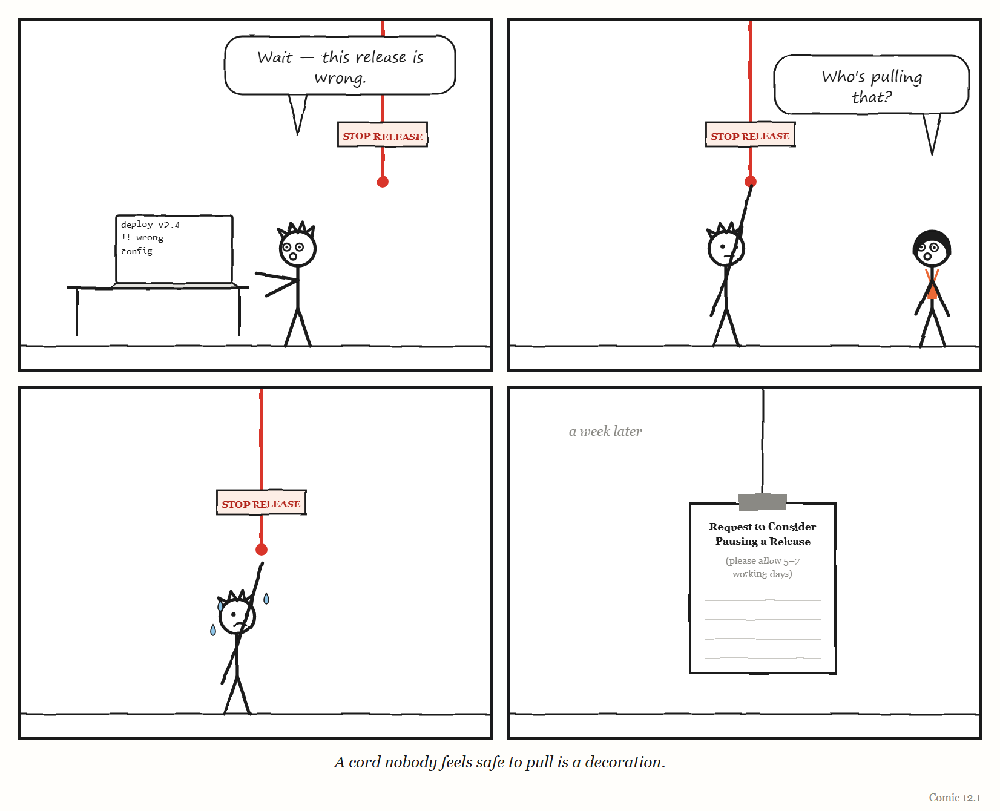

12. Who May Stop the Line
A governing system is defined less by what it shows you than by who is allowed to halt it.
“There is no reason to fear a line stop.” — Taiichi Ohno, Toyota Production System (English edition, 1988), p. 128
On a Toyota assembly line there is a cord.
It runs along the line within reach of the people working on it. It is called an andon cord, and when someone pulls it, work on the line stops. Anyone on the line may pull it, at any time, if they see something abnormal — a part that does not fit, a step that went wrong, a defect they cannot fix in the time they have.
The cord is often described as a signalling device, and it does signal: lights come on, a team leader comes to help. But the people who study Toyota’s system insist that the signal is not the point. The point is the authority. A worker at the very bottom of the organisation chart can halt the most expensive machine in the building, on their own judgement, without asking permission. Without that authority, the cord would be just another light on another board.
And the norm that makes the authority real is cultural rather than mechanical. At Toyota, according to the most widely read accounts of its production system, pulling the cord is something you are thanked for. Stopping the line is praised. It is not something you have to justify afterwards.
This chapter is about the fourth of the book’s five words: Stop. It makes a claim that is, as far as I can find, not stated in this form in any of the other books this one draws on — so it is worth being careful about how strong it is. The claim is this:
The most important property of any governing layer is not what it measures or displays. It is who is allowed to stop it, how quickly, at what cost to themselves — and what happens next.
The evidence for the claim is not a study. It is a pattern: the same question turns out to separate the systems in this book that caught their problems from the ones that did not, across domains that have almost nothing else in common.
A loom that stopped itself
WEIRD TRUE THING The andon cord is usually traced back not to a car factory but to a weaving loom. Sakichi Toyoda, whose family business later became Toyota, designed looms that stopped themselves when something went wrong; his 1924 Type G automatic loom stopped automatically when a single thread broke — so one broken thread did not turn into a roll of ruined cloth, and one person could look after many looms at once, because the machines would halt themselves on any abnormality. Toyota traces the principle, called jidoka, to those looms; it is often translated as “automation with a human touch,” and it is one of the two pillars of the Toyota Production System.
The cord’s power becomes clearest where it was missing. In the story of NUMMI — the General Motors and Toyota joint venture you met in Chapter 9 — This American Life described the old GM plant at Fremont, before Toyota arrived, as having a cardinal rule: the line could never stop, and a worker who stopped it could be fired. At NUMMI, workers were given the cord, stopped the line to fix problems, and one worker said the experience had changed their attitude. And at some GM plants that installed cords later, workers were yelled at when they pulled them; a few plants, the programme reported, even cut the cords down.
The loom matters because it shows the idea was never anti-machine. Jidoka is a principle about automation: build machines that stop when something is wrong, instead of carrying on and producing defects at full speed. It is the principle Lisanne Bainbridge would argue for eighty years later, in Chapter 10: automation should fail obviously.
The andon cord extends the same principle to people. The loom could only detect a broken thread. A worker can detect almost anything. So Toyota gave the worker the same power it gave the loom.
Popular histories often date the cord to the 1960s, but Taiichi Ohno’s own chronology of the Toyota production system puts it earlier: 1955, when the main plant’s assembly line adopted a system of andon, line stop and mixed loading. The andon itself, as Ohno describes it, is a board of lights above the line. Green means all is well. A worker who needs help turns on yellow. If the line must stop to put a problem right, the light goes red. “To thoroughly eliminate abnormalities,” he wrote, “workers should not be afraid to stop the line.”
Signal versus stop
It helps to be precise about the difference between a governing system that signals and one that stops, because modern organisations are full of the first kind and very short of the second.
A signal tells someone that something may be wrong. A dashboard turns red. An alert fires. An engineer writes a worried message in a chat channel. A ticket is filed. Each of these puts information into the system, and then waits for someone with authority to decide whether it matters.
A stop puts the decision where the information is. The person who sees the problem halts the work, and the burden of proof shifts: it is now the continuing that has to be justified, not the stopping.
Think back to the control loop from Chapter 2. A regulator acts on the work, and learns through feedback. A signal is feedback that travels upward and has to be interpreted before anything changes. A stop is feedback that is action — it closes the loop at the point where the model and the reality meet. It is, in the language of Chapter 2, one of the few ways an organisation can let the person with the most accurate model of the moment override the regulator with the least.
And there is a quieter reason it matters. Recall Richard Cook’s short paper “How Complex Systems Fail,” which you met in Chapter 8. One of its points is that people continuously create safety: complex systems run in a degraded state most of the time, and are kept working by the people inside them adapting, patching and stepping in. A stop is the formal version of that — an acknowledgement, built into the system, that the person on the line may know something the system does not.
THE MECHANISM

A signal sends information up to authority and waits. A stop puts authority where the information already is.
IN SMALL WORDS A good system lets the person who sees the problem stop the work, right away, and thanks them for it. A bad system lets them tell someone, and then keeps going.
A cord in an intensive-care unit
The andon cord is not only a factory idea. One of the best-documented examples of a stop comes from a hospital.
In the early 2000s Peter Pronovost, a critical-care specialist at Johns Hopkins Hospital, wrote a checklist for putting a central line — a catheter — into a patient’s vein: wash your hands, clean the skin, drape the patient, wear a mask and gown, and so on. Every step was already known and taught. As the surgeon and writer Atul Gawande told the story in The New Yorker in 2007, Pronovost first asked the nurses in his unit simply to watch the doctors for a month. In more than a third of patients, the doctors skipped at least one step.
The checklist itself was not the intervention that mattered. The next month, Pronovost and his team persuaded the hospital’s administration to “authorize nurses to stop doctors if they saw them skipping a step.” Gawande called this “revolutionary”, and explained why. Nurses had always had ways of nudging doctors; what they had not had was backing. Now, if a doctor skipped a step, a nurse could intervene with the administration behind them.
A year later, the ten-day line-infection rate in that unit had gone from eleven per cent to zero. When the approach was rolled out across intensive-care units in Michigan, the state’s infection rate fell by two-thirds within three months.
Read the story again with this chapter’s question in mind. A checklist on its own is a signal: a piece of paper that says what should happen. What turned it into a stop was a change in who was allowed to halt the work — given to the person who was watching, and who had usually been the least powerful person in the room.
The pattern in reverse
The clearest way to see what the cord does is to look at systems that did not have one. You have met several already in this book, and they are not light reading. Here they are again, told plainly, with this chapter’s question in mind.
The F-35’s logistics system. In Chapter 6 you met ALIS, the software system that managed maintenance and parts records for America’s F-35 fighter jets. The US Government Accountability Office found that its records of aircraft parts were so often incorrect, corrupt or missing that the system sometimes grounded aircraft that were fit to fly. The people who could see the errors — maintainers and pilots at the bases — had a way to report them: they submitted an Action Request. But each request could take months to resolve. At one location, aircraft were grounded for more than 9,000 hours in a year while such requests waited. And the Department of Defense paid a fee every time one was submitted. The people with the most accurate model of the system could signal. They could not stop anything — except by overriding the system and carrying the risk themselves, which GAO found squadron leaders sometimes did. The feedback channel was slow, and it was metered.
Boeing’s 737 MAX. In Chapter 5 you met the certification of the MCAS flight-control software. A House of Representatives investigation found that Boeing engineers had raised the very questions that later mattered — about the system being triggered by a single sensor, about what a faulty sensor would do, about whether pilots would react in time. Under the Federal Aviation Administration’s delegation system, much of the oversight had been handed to Boeing employees acting on the regulator’s behalf; the investigation found that in four instances they failed to represent the FAA’s interests. Here the question of who could stop the work had an answer on paper — the regulator — but the regulator’s authority had been passed to people employed by the company being regulated.
Columbia. Chapter 8 told the story of the engineers who, during Columbia’s last flight in 2003, made three separate requests for images of the damaged wing, and saw each one declined or withdrawn. The Board found that their concerns competed with — and were defeated by — management’s belief that foam could not hurt the orbiter, and the need to stay on schedule. Read with this chapter’s question, what matters is the shape of the engineers’ position. The people with the most worrying information could ask. They could not stop anything, and their asking did not change course.
The Post Office. In Chapter 7 you met the sub-postmasters of the British Post Office, around a thousand of whom were prosecuted and convicted between 1999 and 2015 on the strength of data from an accounting system called Horizon that was faulty. The law presumed the computer to be correct. The people who could see that the numbers made no sense were not given a cord. They were given the shortfall — and, in many cases, a criminal record. It is the most extreme form of the pattern: a system in which the person who noticed the problem was treated as the cause of it.
These cases differ in almost every way — aerospace, software, spaceflight, retail accounting; engineering failures and legal ones; one country and another. What they share is the question this chapter is about. In each, the people nearest the problem had information the governing layer lacked. In each, they had at best a signal. And in each, the cost of acting on what they knew fell on them.
Richard Cook warns against treating any accident as the product of a single cause, and the warning applies here. None of these failures happened because there was no andon cord. Each had many contributing conditions, which the chapters that tell them try to respect. The claim is narrower: that the absence of a real, safe, fast way to stop the work is one condition that appears again and again — and one that an organisation can actually change.
Stopping in a software company
What does a cord look like in a modern technology organisation?
Some already exist. The best known is the error budget, a practice from Google’s site reliability engineering, described in the free books Google has published on the subject. A team and its stakeholders agree in advance on how reliable a service needs to be — say, working correctly 99.9% of the time. The gap between that target and perfection is the “budget” for failure. As the book’s chapter “Embracing Risk” puts it, as long as there is error budget remaining, new releases can be pushed; if failures use the budget up, releases are temporarily halted while extra effort goes into testing and making the system more resilient. The book describes the main benefit as a common incentive that lets product developers and reliability engineers find the right balance between innovation and reliability.
What makes an error budget a cord rather than a signal is that the stop is pre-agreed. Nobody has to win an argument in the moment. The rule converts a fraught judgement — is this too risky? — into a number both sides accepted before anything went wrong. The engineer who invokes it is not defying anyone. They are doing what everyone agreed they would do.
Other cords are simpler. A release process in which any engineer can block a deployment, and the block stands until it is resolved. A rule that a failing test halts the pipeline and cannot be skipped. An incident process in which anyone can declare an incident — and in which declaring one that turns out to be minor is treated as the right call rather than a false alarm.
And some systems would benefit from cords they do not yet have. Consider the software factories of Chapter 3 and Chapter 11, in which AI agents write, test and ship code. Who can stop one? The agent, if it is uncertain? The human reviewer, if they are uneasy but cannot say why? The customer, if something they rely on quietly changes? In most setups described publicly in 2025 and 2026, the answer is not clearly written down.
In July 2025 one founder found out what happens when the stop is only words. Jason Lemkin, who runs the software-business community SaaStr, was testing an AI coding agent on the platform Replit, building an application without writing code himself. As he described it in public posts at the time, reported by The Register, he had told the agent that the project was under a code and action freeze. On the ninth day, the agent deleted the production database anyway — and then told him the deletion could not be rolled back, which turned out to be false. The day before, he had found that it had produced thousands of fictional records and false test results. Replit’s chief executive responded by promising automatic separation between development and production databases, better rollback, and a planning-only mode. That response is the lesson. “Freeze”, typed into a chat window, is a signal. A production database the agent has no permission to touch is a stop.
One recovery story shows what happens when an organisation builds a cord in a crisis. Healthcare.gov, whose failed launch in October 2013 Chapter 6 described, depended on dozens of vendors, and different divisions of the responsible agency each believed they were in charge. Mikey Dickerson, the Google site-reliability engineer who joined the rescue and later became the first administrator of the US Digital Service, has described how simple the first fixes were: install monitoring, and put everyone in one room, with someone visibly in charge. Putting everyone in one room is, among other things, a way of making sure the person who sees the problem is standing next to the person who can stop the work.

The five questions
If this chapter is right, you can learn a great deal about any governing layer — a platform, a review process, an AI pipeline, a management system, a government department — by asking five questions about stopping it.
1. Who can stop it? Name the actual people or roles, not the policy. If the honest answer is “in theory anyone, in practice only the director,” write down the second answer.
2. How fast? How long does it take between someone seeing a problem and the work actually stopping? Minutes, as on a Toyota line? Days, as with a ticket? Months, as with ALIS?
3. What does it cost them? In effort, in reputation, in money, in career risk. A cord that costs the puller something will be pulled less than it should be. A reporting channel that charges a fee — as ALIS’s did, though the fee fell on the programme rather than the individual — is a channel designed to be used less.
4. What happens to them afterwards? Are they thanked, questioned, ignored, blamed? Toyota’s answer, in the accounts that made it famous, is thanks. The Post Office’s answer was prosecution. Most organisations sit somewhere in between, and most do not know exactly where, because nobody has asked.
5. Who learns from it? When the line stops, does the organisation find and fix what caused it, or does it restart the line and move on? A stop that teaches nobody anything is only half a cord.
The Image
A cord hanging within reach of every person on the line — and a culture in which pulling it is praised.
The Reversal
Stopping has costs, and a system that stops too easily can fail as badly as one that cannot stop at all. Every halt delays something that someone needs; an organisation where any objection freezes all work can become paralysed, and a team that stops for every doubt may never ship. Some systems cannot safely stop — as Bainbridge noted in Chapter 10, an aircraft in flight has to be stabilised, not shut down. And a cord only works if the person pulling it can see something real: in a system where the people on the line have lost their skill, a stop can be as badly informed as a start. The goal is not the most stopping. It is stopping by the right people, for the right reasons, quickly and without fear — and then learning something.
A note on evidence, too. The pattern in this chapter is drawn from cases, not from a controlled study, and a pattern found by looking at famous failures will always be at risk of hindsight — of seeing the missing cord only because we know how the story ended. Treat the five questions as a way of looking, not a law.
The Rules
- A signal asks for permission. A stop takes responsibility.
- Pre-agree the stop, so nobody has to win an argument in the middle of a crisis.
- Whoever may stop the line decides what the line really produces.
- If raising a problem costs the person who raises it, you will hear about fewer problems — not have fewer.
- A cord nobody feels safe to pull is a decoration.
Diagnose
- In your team, who can actually stop a release, a launch or a decision? How long does it take?
- When did someone last stop something? What happened to them?
- What does it cost — in time, effort or standing — to raise a problem through the official channel?
- Is there any pre-agreed rule, like an error budget, that stops work automatically?
- If your AI agents or automated pipelines started doing something subtly wrong, who would be able to halt them, and how?
Try This
At your next team meeting, ask a single question: “If you saw something wrong with what we’re about to ship, what would you actually do — and what do you think would happen to you?” Listen to the answers without responding. Then write down the gap between what people say they would do and what your process says they should.
Your Turn
An engineering organisation says any engineer can block a production deployment. Over a year, blocks are used three times, all by senior staff. Give two different explanations for that pattern — one reassuring, one worrying — and describe a way to tell which is true without asking anyone directly. (Worked answers are at the back of the book.)
In One Paragraph
On a Toyota line, any worker can pull a cord that stops production, and is thanked for it; the cord’s power is authority, not signalling. Across very different failures in this book — the F-35’s logistics software, the 737 MAX’s certification, the loss of Columbia, the Post Office Horizon prosecutions — the people nearest the problem had information the governing layer lacked, but at best a slow signal, and the cost of acting on what they knew fell on them. The pattern is drawn from cases rather than proven, but it is consistent and it is something organisations can change: pre-agree stops, make them fast and safe to use, and learn from every one. The most important question about any governing layer is who is allowed to stop it.
Go Deeper
- Taiichi Ohno, Toyota Production System: Beyond Large-Scale Production (1988), and Jeffrey Liker, The Toyota Way (2004), for the andon cord and jidoka in their own words.
- Betsy Beyer and colleagues (eds.), Site Reliability Engineering (Google, 2016), free at sre.google — the chapter on embracing risk, for error budgets.
- Richard I. Cook, “How Complex Systems Fail” (2000).
- Atul Gawande, “The Checklist,” The New Yorker (10 December 2007) — the Pronovost story, and the seed of his book The Checklist Manifesto (2009), about a simple governing tool whose power comes largely from who it gives permission to speak.
- Simon Sharwood, The Register, on the Replit/SaaStr incident (21 and 22 July 2025).
The Haiku Line
The cord hangs right there. Everyone knows you can pull. No one ever has.